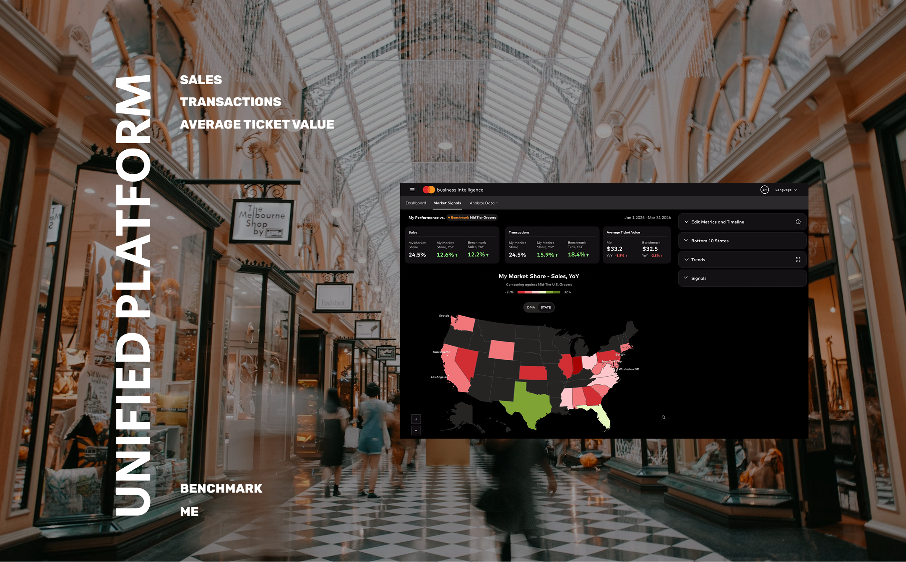

Economic Intelligent Platform

The problem
Economic intelligence program is a 77M buinsess with 5 products for executives and analysts to benchmark and forecast their performance. Business team envisioned a future where there is one unified platform that bring all experiences together and reduce operational costs.
User Persona Research
Finance analysts and executives are the target users


Through this a unified platform, leadership expects to deliver seamless experience, reduce operational costs and upsell MA products.

Leadership's goals
Seamless Experience
Clients should not have to engage with different sales and product teams to access benchmarking or forecasting insights.
Reduce Operational Cost
By transitioning products to a single hosting service, centralizing engineering support under one team, and streamlining maintenance requests through one sales team, operational costs will be significantly reduced.
Graduate users through a journey
Providing visibility into market trends and business performance is the first step toward driving adoption of action platforms such as Test and Learn.
Leveraged AI to
explore boundary

Highlight 1 - The prototype resonated strongly with leadership by centering the experience around market awareness — giving users a clear picture of what is happening across their business, and how macro-economy trends affect them, rather than focusing on task-level actions. When demoed with partner teams, it generated significant excitement and buy-in.

Highlight 2 - After experimenting with several AI tools, I found that pixel-level control over prototypes remained a consistent challenge — output quality felt probabilistic rather than precise. I ultimately combined Google Stitch to generate a visually cohesive design system with Figma for mid-fi and high-fi prototyping. The hybrid approach required some manual effort, but ensured I could incorporate stakeholder feedback with full control over every design decision..
Leverage on experts to
validate assumptions

Stakeholder feedback session - 7 PMs were invited to provide feedback on the revised prototype. Their input was captured on individual sticky notes and later synthesized into a new version of the prototype, reflecting the shared alignment across the team.
Create a North Star Version to
align multiple work-streams


Fabiana Piscitelli, Exeuctive Vice President at Mastercard
Kaushik Gopal, Exeuctive Vice President at Mastercard
SThis will lead to ... Test and Learn. This is what I mean by “Graduate users through a journey”. The explainability is what we can sell to more merchants and help them drive better business decisions.
Craig Vosburg, Chief Product Officer of Mastercard
I like it. Great stuff. When will this be online?
User Research

User Story
User Acquisition
Adam is a strategy analyst at Grocery A, working closely with executives and regional leaders to identify growth opportunities using data. At the start of Q1, leadership begins annual financial forecasting and relies on Adam to help shape the strategy. While browsing LinkedIn, Adam comes across a video from Mastercard's Chief Economists, highlighting a key insight: consumer spending is shifting toward at-home food consumption. The message immediately resonates with his current business challenge, and he opens the content. The video leads him into Mastercard Business Intelligence, where he explores a report preview titled "Consumer Spending Shifts Are Reshaping the Grocery Landscape." The data confirms his hypothesis: Grocery demand is rising, but growth varies by location. To unlock the full insights, Adam signs up.
User Engagement
Know what
has happened
After onboarding to Economic Intelligence product, Adam gains access to premium grocery sector insights and a powerful economic monitoring tool customized to his regions and categories. He begins with the Economic Intelligent Dashboard, where macroeconomic trends are translated into concise AI generated insights for his business. The dashboards are intuitive and shareable. Adam evaluates both internal KPIs and market benchmarks grounded in Mastercard consumer spending data, helping him determine whether his business is outperforming or under pressure amid broader economic trends.
Know where
and why
To refine his Q1 strategy, Adam navigates to the Market Signal tab. Using smart radius filters, market share heatmaps and bottom 10 list, Adam identifies states and locations where the market is growing, yet Grocery A's share is declining. Supporting signals, coming from Mastercard Chief Economists like Michelle, indicating improving weather conditions and easing inflations are expected to drive local grocery demand.
Adam then benchmarks these stores against competitors and adjacent sectors using benchmark selector. He discovers the underperformance is significant — not only trailing top 10 groceries in US, but also lagging behind fast food and restaurant segments.
Know what to
do next
Adam navigates to the bottom 10 list and Investigator AI, which surface priority states and stores and recommends targeted interventions. One key recommendation is a 3-week lunch promotion projected to increase market share by 6% and recover approximately $210k in local revenue.
Adam consolidates these insights — performance gaps, state/store prioritization, and recommended actions — into clear strategy and successfully presents it to executives and regional leaders in Q1 review.
Deliver the MVP Experience
Main Flow - Dashboard

Main Flow - Market Signal

Increased Revenue
Mastercard Economic Intelligent provides a unique scaleable product for Finance teams at Fortune 500 companies.
70M
25% of Mastercard’s 2027 Company-Level Investment
Walmart
Target
Prada
LVMH
NIKE
LULULEMON
Publix
Reflections from Yingxiao
During the first week after the PM asked me to create a five-year vision plan, a team member quickly vibe-coded a prototype that the PM really liked. As a result, the PM reached out to pause my project and kindly shared the prototype with me. Although I was impressed by the speed and quality of the vibe-coded result, I realized it did not fully address the original business problem the PM had described. Instead of stopping entirely, I spent a few more days building out the initial concept based on a deeper understanding of the underlying needs and presented it to the PM.
The response was overwhelmingly positive. He became excited about the broader opportunities the concept revealed and later prioritized this workstream as the team's highest priority. What I learned from this experience is that designers should not be intimidated by others gaining access to design tools or vibe coding capabilities. The real differentiator is a deep understanding of business goals and user needs, and the ability to translate them into meaningful solutions.
To discuss this case study with me, feel free to send an email to lunaatlgt@gmail.com